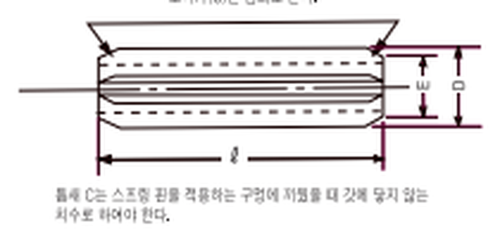
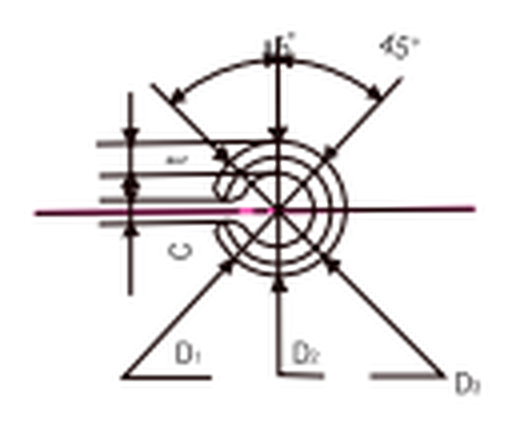
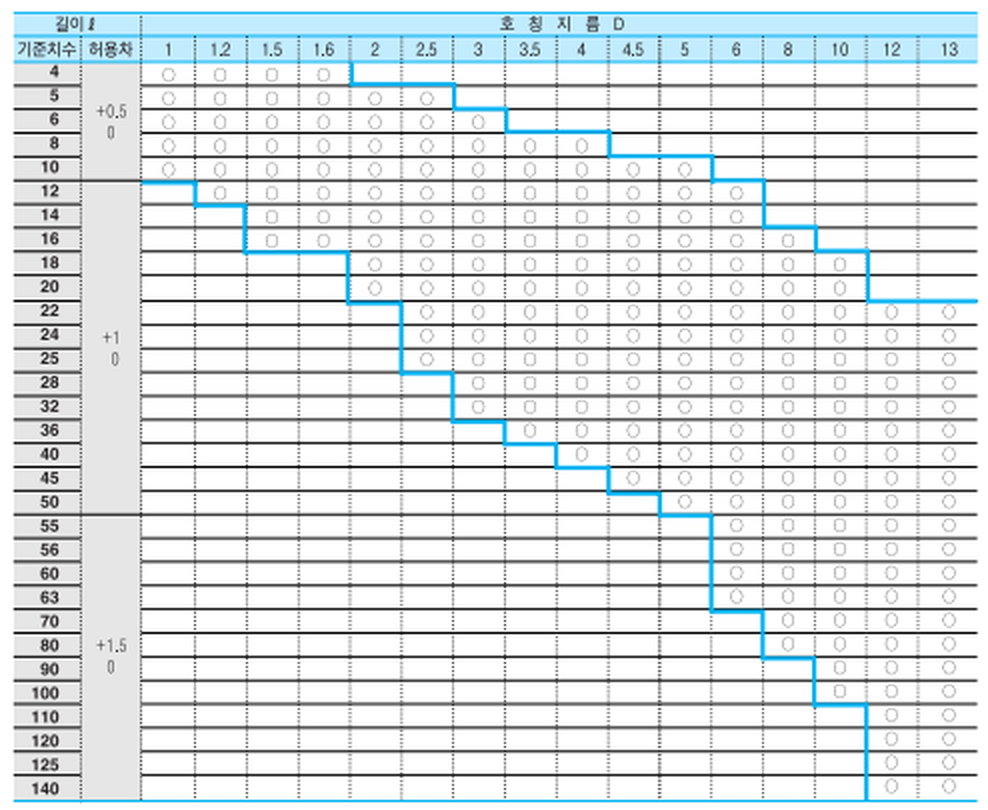

Spring Pin · Parallel Type
말린 강판을 원통형으로 성형해 자체 탄성으로 구멍 벽면을 압박해 고정되는 핀입니다. 평행형은 전체 길이에 걸쳐 지름이 일정해, 노크 핀·힌지 핀 대용으로 널리 사용합니다. 규격은 KS B 1339, JIS B 2808을 따릅니다.
당사 정식 규격 도면

↑ 정면도 — 원통형 몸체에 슬릿(이음매)이 있는 구조
ℓ=전체 길이 · D=바깥지름 · 모따기(C)는 구멍에 걸리지 않는 범위에서 임의 가공

↑ 끝단 45° 모따기 단면
D1·D2·D3=단계별 지름(평균값이 D 최소) · C=구멍과의 틈새
| 호칭지름 | D 최대 | D 최소 | t 기준치수 | E 최대 | 2중전단하중 (kgf) | 2중전단하중 (KN) | 적용 구멍경 | 적용 구멍 허용차 |
|---|---|---|---|---|---|---|---|---|
| 1 | 1.2 | 1.1 | 0.2 | 0.9 | 70 | 0.69 | 1 | +0.08 / 0 |
| 1.2 | 1.4 | 1.3 | 0.25 | 1.1 | 104 | 1.02 | 1.2 | |
| 1.5 | 1.7 | 1.6 | 0.3 | 1.4 | 158 | 1.55 | 1.5 | |
| 1.6 | 1.8 | 1.7 | 0.3 | 1.5 | 171 | 1.68 | 1.6 | |
| 2 | 2.25 | 2.15 | 0.4 | 1.9 | 281 | 2.76 | 2 | +0.09 / 0 |
| 2.5 | 2.75 | 2.65 | 0.5 | 2.4 | 440 | 4.3 | 2.5 | |
| 3 | 3.25 | 3.15 | 0.6 | 2.9 | 633 | 6.2 | 3 | |
| 3.5* | 3.84 | 3.7 | 0.7 | 3.4 | 861 | 8.44 | 3.5 | +0.12 / 0 |
| 4 | 4.4 | 4.2 | 0.8 | 3.9 | 1130 | 11.08 | 4 | |
| 4.5* | 4.84 | 4.7 | 0.9 | 4.3 | 1425 | 13.97 | 4.5 | |
| 5 | 5.4 | 5.2 | 1 | 4.8 | 1760 | 17.25 | 5 | |
| 6 | 6.4 | 6.2 | 1.2 | 5.8 | 2532 | 24.83 | 6 | |
| 8 | 8.6 | 8.3 | 1.6 | 7.8 | 4500 | 44.13 | 8 | +0.15 / 0 |
| 10 | 10.6 | 10.3 | 2 | 9.8 | 7030 | 68.94 | 10 | |
| 12* | 12.5 | 12.3 | 2 | 11.7 | 8790 | 86.2 | 12 | +0.2 / 0 |
| 13 | 13.7 | 13.4 | 2.5 | 12.7 | 11500 | 112.78 | 13 |
* 표시 호칭지름은 KS/JIS 표준 계열이 아닌 참고 규격입니다.

↑ ○ 표시 = 해당 길이(ℓ)·지름(D) 조합이 표준 생산 규격임 · 같은 굵은 계단선 구간은 길이(ℓ) 허용차가 동일한 그룹
※ 위 도면과 표는 당사 정식 규격표 원본을 직접 옮겨 작성했습니다. D 최대는 핀 원둘레 위에서의 최댓값, D 최소는 D1·D2·D3의 평균값입니다. 길이×지름 생산 규격표는 원본 매트릭스를 그대로 옮긴 이미지입니다. 정밀 가공·발주 전에는 반드시 정식 카탈로그 원본으로 최종 확인하시기 바랍니다.